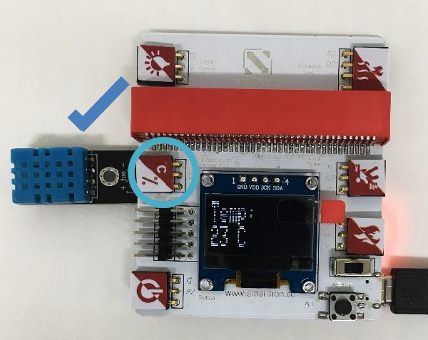
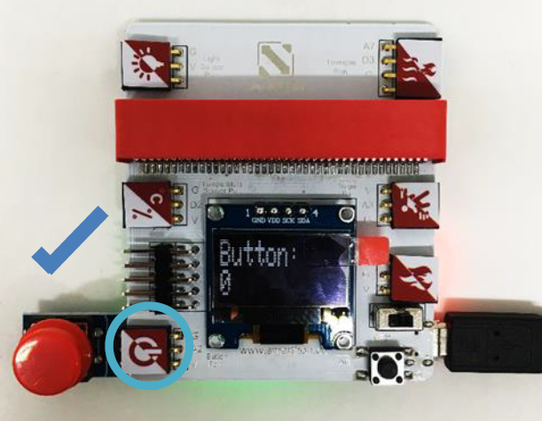
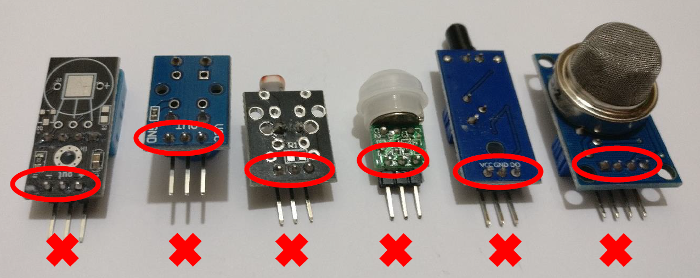
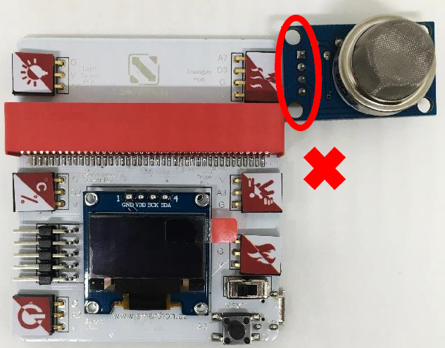
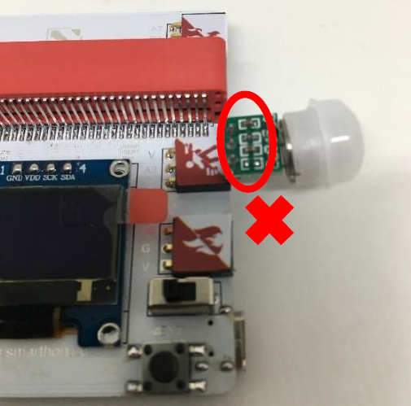
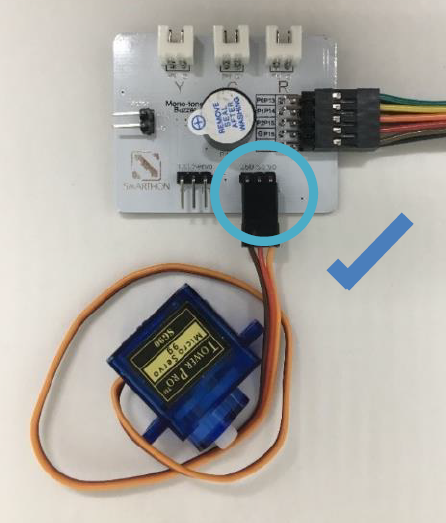

3. Hardware User Guide¶
3.1. A. The Sensors¶
How to connect the sensor modules and Multiple Sensors for smart house?
Please follow the instructions shown below to plug sensor modules into Multiple Sensors correctly to ensure all the modules work effectively.
All Sensors:

Light Sensor

Temperature and Humidity Sensor 
Button 
Motion Sensor

Flame Sensor

Town Gas Sensor

Caution!
Incorrect Plug-in:
User should NOT plug the sensors into the Multiple Sensors for smart house at incorrect format as shown in below. Incorrectly plugging in the Multiple Sensors will cause:
an error of the sensor value
electrical short circuit as well as damage the sensors or Multiple Sensors for smart house
You must always be concerned with your own safety first and cut-off power supply and remove sensors under safe conditions

Incorrect Plug-in Example 1: 
Incorrect Plug-in Example 2: 
3.2. The Actuators¶
How to connect the actuator modules and Multiple Actuators for smart house?
Please follow the instructions shown below to plug actuator modules into Multiple Actuators correctly to ensure all the modules work effectively.
180° Servo

360° Servo 
Motor Fan

LED Light (Yellow)

LED Light (Green)

LED Light (Red)

Caution! Actuators will not work properly if users connect it with the Multiple Actuators incorrectly.
Incorrect Plug-in Example: